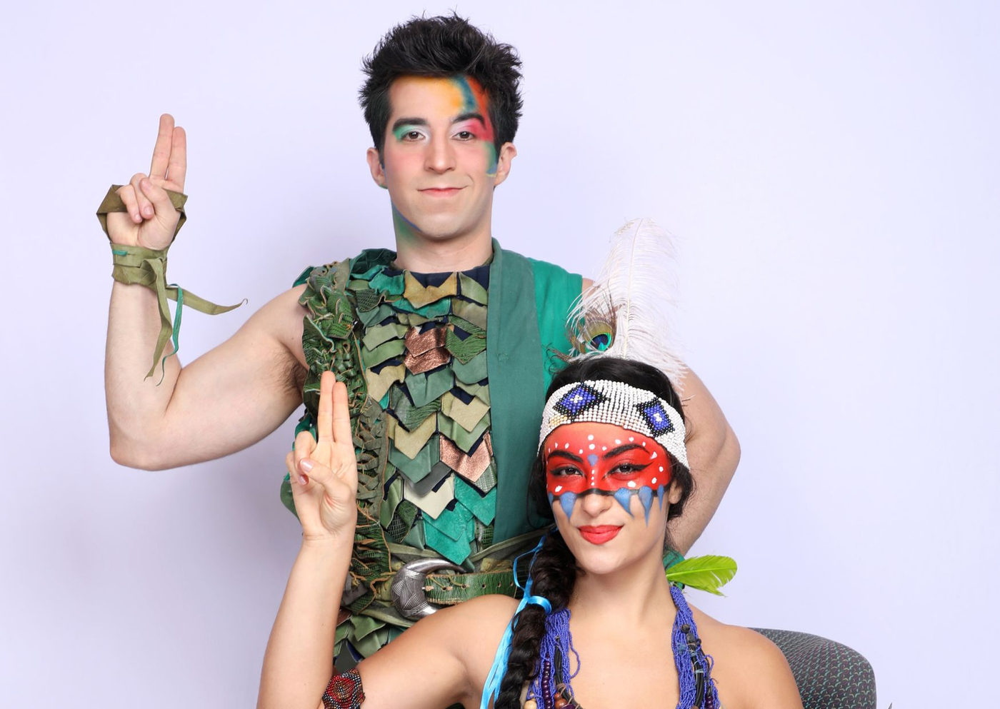

"Peter Pan - O Musical da Broadway" Retorna ao Teatro Liberdade para Última Temporada em São Paulo

A superprodução Peter Pan - O Musical da Broadway volta ao palco do Teatro Liberdade, em São Paulo, para uma última e imperdível temporada, a partir de 7 de novembro.
Com direção de José Possi Neto e um elenco estelar, a montagem da Touché Entretenimento, de Renata Borges, é uma adaptação grandiosa do clássico de J.M. Barrie, mantendo a magia e a qualidade que conquistaram mais de 130 mil espectadores desde sua estreia no Brasil, em 2018.
Elenco de Destaque
Mateus Ribeiro, premiado por sua performance como Peter Pan, retorna ao papel-título, prometendo encantar o público com seu carisma e talento. Saulo Vasconcelos, uma lenda do teatro musical brasileiro, revive sua interpretação marcante do Capitão Gancho, que já impressionou o público na temporada de 2022. Belle Cárceres assume o papel de Wendy, enquanto Bia Passos interpreta Sininho e Jane, e Gabi Camisotti dá vida à Tiger Lily.
O elenco também inclui Diego Montez como Smee, Gui Figueiredo como John, Luke Li como Michael, Anna Preto como Sra. Darling, além de um talentoso grupo de Meninos Perdidos e atores em papéis de cobertura e ensemble, garantindo que cada performance seja memorável.
Uma Superprodução Adaptada
Embora a nova temporada tenha sido adaptada para uma versão um pouco menor, Peter Pan - O Musical da Broadway mantém sua grandiosidade com parte do cenário original e efeitos especiais impressionantes. A produção já recebeu mais de 50 indicações aos principais prêmios do gênero, destacando-se como uma das montagens mais aclamadas da última década. Com trilha sonora de Bianca Tadini e Luciano Andrey, o musical traz canções emocionantes e coreografias dinâmicas, envoltas em uma atmosfera mágica que transporta o público para a Terra do Nunca.
Equipe Criativa de Alto Nível
O espetáculo conta com uma equipe criativa renomada:
Direção: José Possi Neto
Direção musical e regência: Carlos Bauzys
Coreografia e direção de movimento: Alonso Barros
Cenografia: Renato Theobaldo e Roberto Rolnik
Figurinos: Thanara Schonardie
Desenho de som: Gabriel D'Angelo
Desenho de luz: Pedro Forjaz
Tecnologia e voos: ZFX Flying Effects
Projeções: Maze FX
A direção de remontagem e residente é de Cecília Simões, com assistência de Vanessa Costa, garantindo que cada detalhe seja fiel à visão original.
A Mágica História de Peter Pan
Peter Pan narra as aventuras do menino que se recusa a crescer, vivendo na Terra do Nunca, onde a imaginação não tem limites. Junto com a fada Sininho, ele lidera os Meninos Perdidos e enfrenta o vilão Capitão Gancho. Quando Peter Pan leva Wendy, John e Michael Darling para a Terra do Nunca, eles descobrem o verdadeiro significado da amizade, coragem e amor.
Serviço
Local: Teatro Liberdade – Rua São Joaquim, 129, Liberdade, São Paulo
Temporada: De 7 a 30 de novembro
Horários: Quartas, quintas e sextas às 20h | Sábados às 16h e 20h30 | Domingos às 16h
Duração: 2h30 (com intervalo de 15 minutos)
Gênero: Musical
Classificação: Livre
Ingressos: Disponíveis na Sympla e na bilheteria oficial do Teatro Liberdade
Garanta seus ingressos e prepare-se para uma última aventura mágica com Peter Pan - O Musical da Broadway!